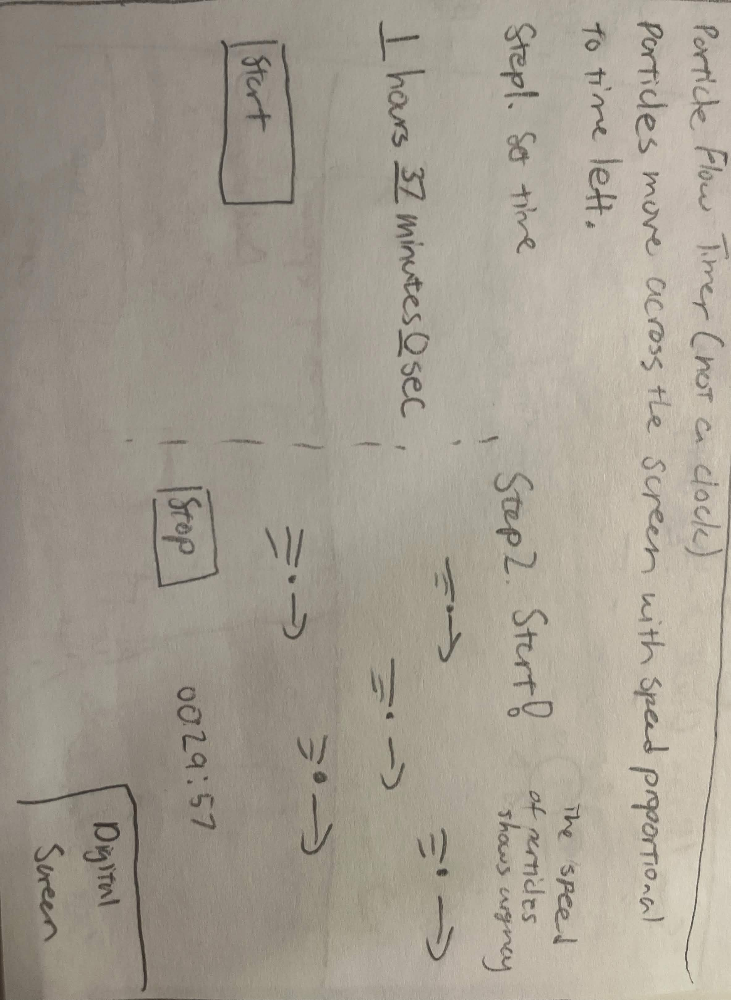
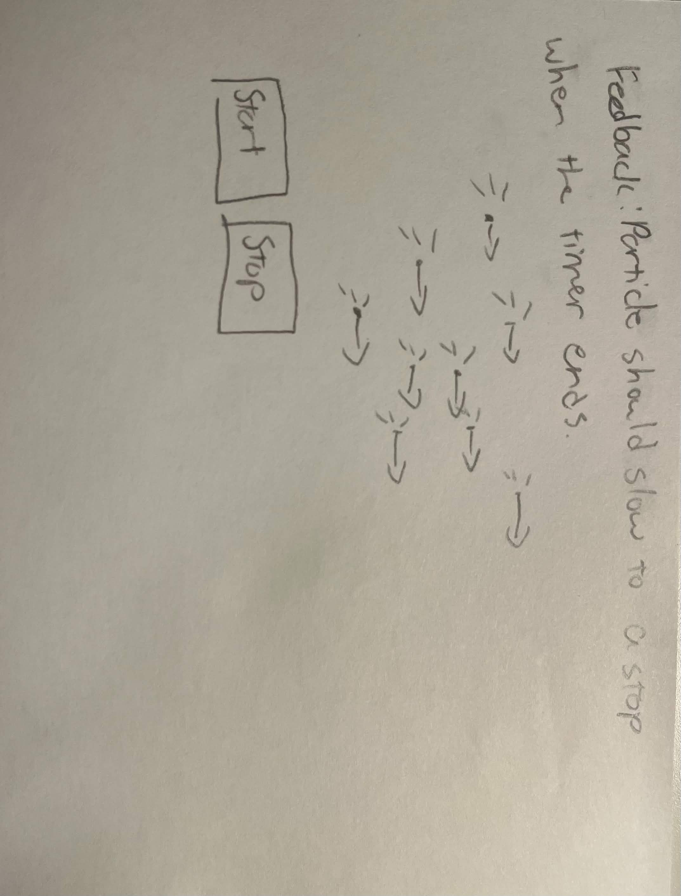
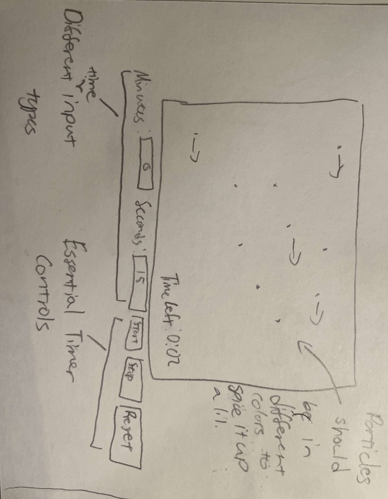
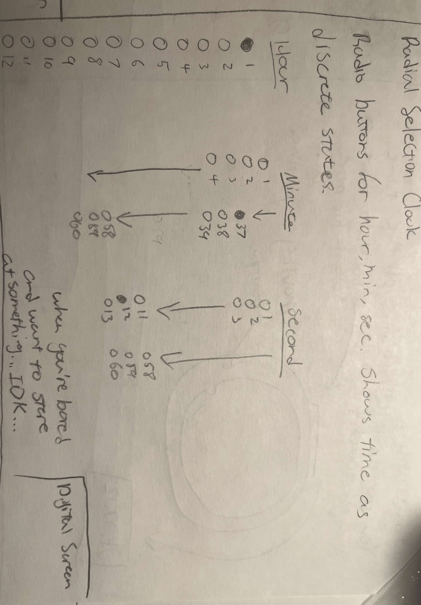
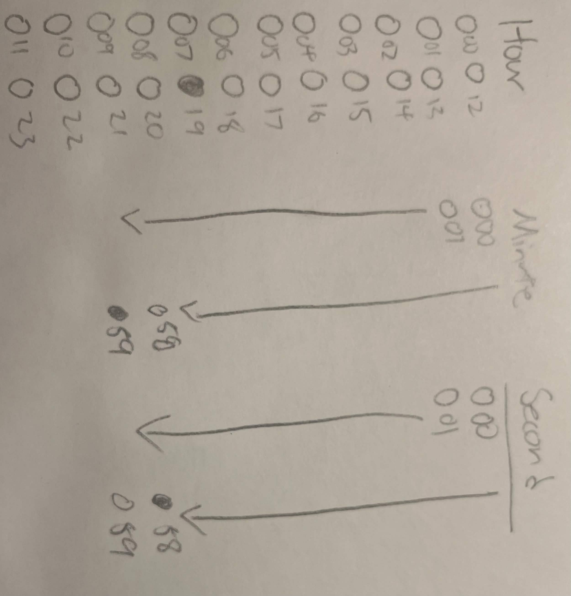
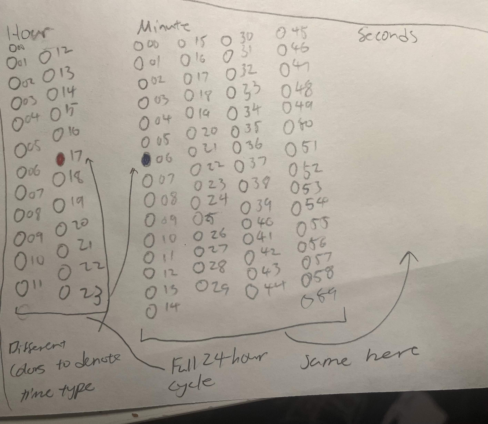

Sketch narrative
This countdown timer visualizes the passage of time using moving particles, where the speed of the particles indicates how much time remains.
- Context: Designed for users engaging in focused or time-sensitive activities, like studying, meditation, or breathing exercises, where subtle, non-distracting visual feedback helps track the passage of time. Users can set a timer in minutes and seconds.
- Design decisions: Particle speed slows as time runs out, making the urgency of time passing intuitive without needing to read the clock. The variation in color adds visual interest while preventing the animation from feeling repetitive, especially during longer timers.
- Future work: Add presets like 5 min, 10 min, 15 min, 25 min Pomodoro, etc.
Sketch evolution



Sketch narrative
Replace this entire block with your own text when submitting.
This clock visualizes the current time using non-interactive, vertical radio-button lists for hours, minutes, and seconds. It's intended as an example of an unconventional clock that communicate time in unsual formats.
- Context: This would be for users on a website exploring creative (or poorly designed) clocks. This clock emphasizes on visual experimentation rather than fast readability.
- Design decisions: Hours, minutes, and seconds are arranged in three vertical lists with multiple columns to fit within the canvas while keeping all values evenly spaced and visible. Each unit uses a distinct color for the selected value to make the current selection easier to find.
- Future work: Adding an animation to the selected value so the selected time pulses subtly, making it easier to identify changes. Maybe even add a smoother transition effect between time changes.
Sketch evolution
Replace these images with your own sketch evolution images.



Sketch narrative (replace this and add to the other two sketches!)
Replace this entire block with your own text when submitting.
Context: Briefly describe the situation or user need this sketch addresses. For example, "This sketch visualizes sunrise/sunset behavior for a simple teaching demo on coordinate systems and interaction." Keep it short — 1–2 sentences.
- Context: Who is this for? In what context will it be used? (e.g., mountain, pomodoro, running, cooking, breathing?)
- Design decisions: Explain 2–3 key choices you made (layout, color, interaction) and why you made them. Use plain language and reference any constraints (time, accessibility, or target device).
- Future work: 1–2 ideas for improvements or extensions.
Sketch evolution
Replace these images with your own sketch evolution images.
Sketch narrative
Replace this entire block with your own text when submitting.
This clock visualizes the current time using non-interactive, vertical radio-button lists for hours, minutes, and seconds. It's intended as an example of an unconventional clock that communicate time in unsual formats.
- Context: This would be for users on a website exploring creative (or poorly designed) clocks. This clock emphasizes on visual experimentation rather than fast readability.
- Design decisions: Hours, minutes, and seconds are arranged in three vertical lists with multiple columns to fit within the canvas while keeping all values evenly spaced and visible. Each unit uses a distinct color for the selected value to make the current selection easier to find.
- Future work: Adding an animation to the selected value so the selected time pulses subtly, making it easier to identify changes. Maybe even add a smoother transition effect between time changes.
Sketch evolution
Replace these images with your own sketch evolution images.
Adapted from Golan Levin, 2016-2018